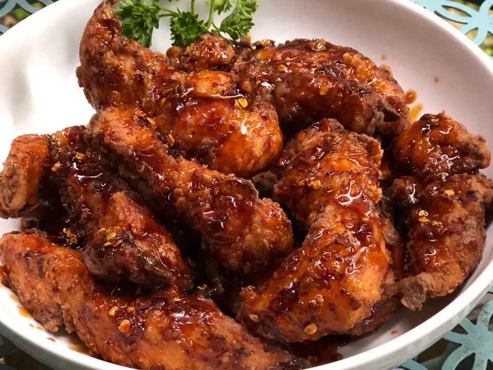

Korean Fried Chicken

Korean Fried Chicken
It took about two decades for this style of Korean fried chicken to make its way into the American foodie scene. The chicken is deep fried twice to make the exterior extra crispy and to lock moisture in. The gochujang sauce is a hot, honey, spicy mix...and well, it's just fabulous. You'll have the family completely raving!
Ingredients
- ⅓ cup milk
- 1 egg
- 1 pound chicken breast tenderloins
- ¼ cup all-purpose flour
- ¼ cup potato starch
- ½ teaspoon salt
- ¼ teaspoon ground black pepper
- vegetable oil for frying
- ¼ cup honey
- ¼ cup brown sugar
- 2 tablespoons soy sauce
- 2 tablespoons gochujang (Korean hot pepper paste)
- 1 tablespoon Worcestershire sauce
- 2 teaspoons red pepper flakes
- 1 teaspoon ground ginger
Steps
- Whisk milk and egg together in a large bowl until thoroughly combined and smooth. Add chicken tenders to egg wash and let marinate in the refrigerator for 15 minutes.
- Combine flour, potato starch, salt, and pepper in a large mixing bowl. Pour mixture into a large, resealable plastic bag. Drain and discard marinade from chicken tenders. Add chicken to the bag, seal it, and shake until each piece is completely dredged in mixture.
- Heat oil in a deep-fryer or large saucepan to 325 degrees F (165 degrees C).
- Add chicken pieces to the hot oil about 5 pieces at a time so as not to drop the temperature of the oil. Fry for 2 minutes. Transfer chicken to a plate lined with paper towels to drain. Continue with remaining chicken pieces.
- Increase oil heat to 350 degrees F (175 degrees C) until continuously boiling. Carefully add the first batch of cooked chicken and fry again until cooked through and crispy about 2 minutes more. Transfer to a plate lined with paper towels to drain. Repeat with the second batch of chicken pieces. Transfer chicken to a medium-sized serving bowl.
- Heat a small saucepan over medium-low heat. Add honey, brown sugar, soy sauce, gochujang paste, Worcestershire sauce, red pepper flakes, and ginger. Cook and stir continuously until sugar has melted and sauce is smooth, about 5 minutes. Drizzle sauce over twice-fried chicken tenders and serve.